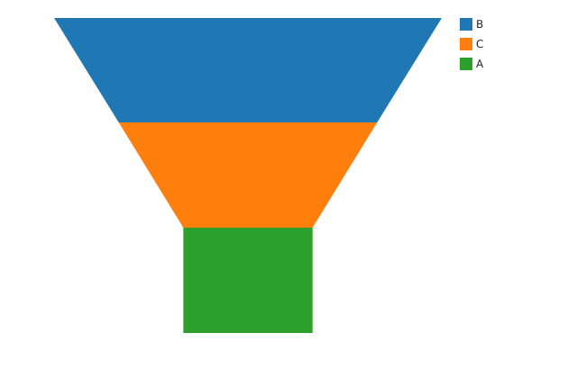
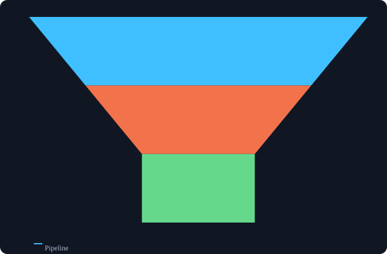
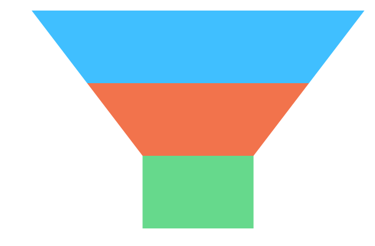
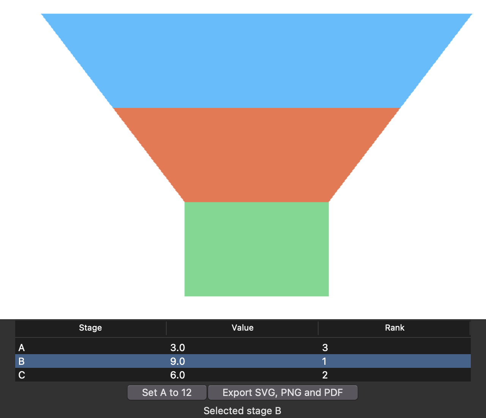

From source order to stage order
A = 3, B = 9, C = 6. The pinned dataviz_mojo reference sorts the stages B, C, A. Each band ends at the width of the stage below it. The last band keeps its width.

Compare Moxi exports ↓
Three centered bands in both Moxi exports

Native SVG

Python SVG
Across 12 vertices, the largest coordinate difference from the reference was 0.001905 of the plot span. The reference rounds stage boundaries to integer pixels. Margins, palette and legend treatment differ.
Inspect a selection ↓
Picking B selects the second source row

The top, middle and bottom bands returned native keys 11, 12 and 10. The exported source table keeps the input order.
See the update ↓